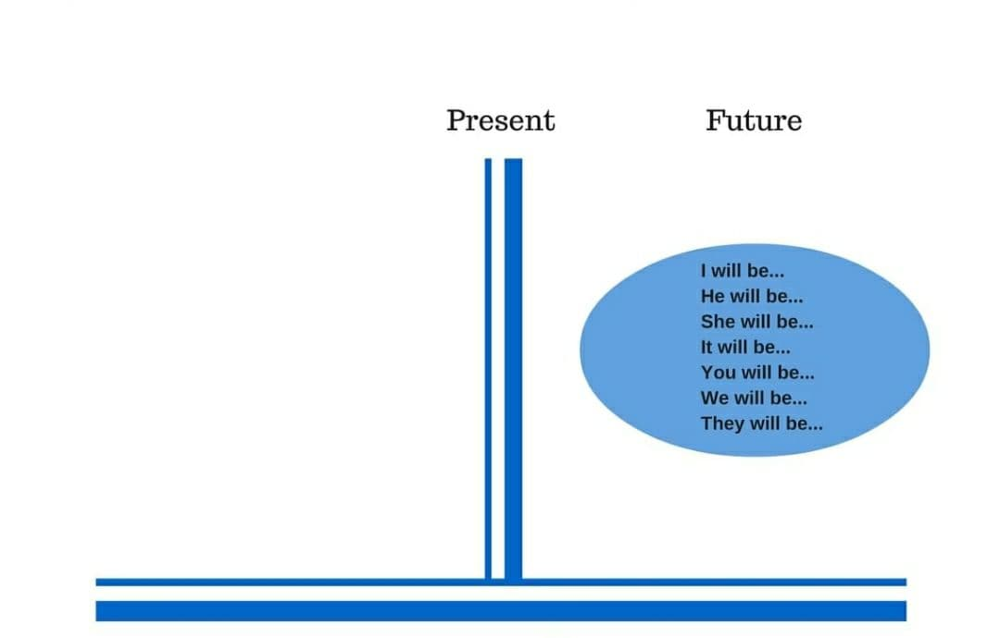

Welcome to UzEnglishAcademy!
"To Be" Fe'lining Past Simple(O'tkan zamon)dagi shakli.
To be ning o'tkan zamondagi shakllari was, were bo'lib, ular ot-kesmlarda bog'lovchi bolib keladi va edi deb tarjima qilinadi.
Birinchi shaxs birlik va uchinchi shaxs birlik uchun was so'zi foydalaniladi. Qolgan holatlarda va ko'plikda esa were ishlatiladi.
For example(Misol uchun)
- She was a teacher.
(u o'qituvchi edi.)
- They were students
(Ular talabalar edi.)
To Be fe'lini o'tkan zamonda qanday shakllantirilishini tushinish uchun quyidagi jadvalga qarang.

Negative form ya'ni inkor shaklida was, were dan keyn NOT ishlatiladi.
PS: jadvalda ko'rsatilgan wasn't, were'nt bu was not, were not ning qisqartirilgan shakli.
Interrogative form ya'ni so'roq shaklida, jadvalda ko'rib turganingizdek was, were egadan oldinga o'tadi.
Examples(Misollar)
- We were not at home.
(Biz uyda emas edik.)
- She was the most beautiful girl in the class.
(U sinfdagi eng chiroyli qiz edi.)
- Was Jake a firefighter?
(Jake o't o'chiruvchi edimi?)
- They were on the bus
(Ular avtobusda edi.)
- I was in the library.
(men kutubxonada edim.)
"To Be" Fe'lining Future Simple(Kelasi zamon)dagi shakli.

Examples(Misollar)
- She will be a student next year.
(u keyingi yilga talaba boladi.)
- I will not be a doctor.
(Men shifokor bo'lmayman.)
- Will Sara be a teacher in the future?
(Sara kelajakda o'qituvchi bo'ladimi?)
Ingliz tilidagi boshqa darslar ro'yxati: